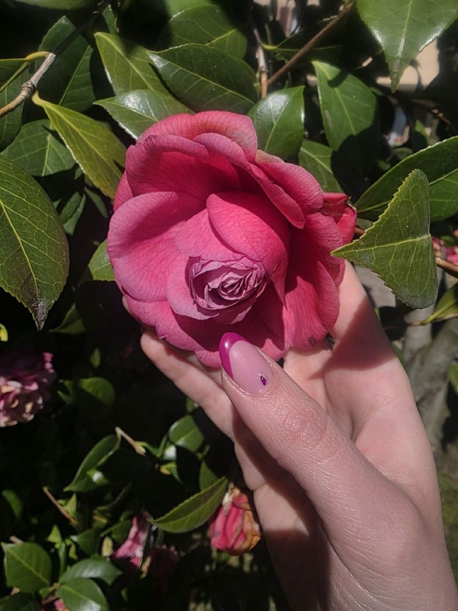
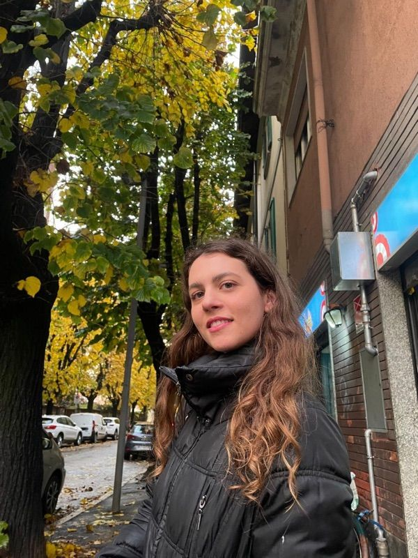

Ascolto autentico
Uno spazio senza giudizio, dove le tue emozioni hanno il tempo di emergere e prendere forma.
Allena la mente, non solo il corpo
Consultazione psicologica in videochiamata, da tutta Italia, per chi vuole capire le proprie emozioni, gestire l'ansia, affrontare scuola o Università e ritrovare equilibrio. Strategie pratiche, ascolto autentico, evidenza scientifica. Primo colloquio conoscitivo gratuito.


Conosci Emma
Sono laureata in Psicologia per il Benessere: Empowerment, Riabilitazione e Tecnologie Positive presso l'Università Cattolica del Sacro Cuore di Milano. La mia formazione integra ricerca scientifica e strumenti pratici per accompagnare adolescenti e giovani adulti nell'affrontare ansia scolastica, gestione delle emozioni, autostima, relazioni e performance.
Ho maturato esperienza nel counseling familiare presso il CMTF di Monza e nella psicologia del lavoro, accompagnando persone in fasi di cambiamento, blocchi e momenti di transizione. Credo in un approccio caldo, evidence-based e profondamente rispettoso della storia di chi ho davanti.
Online, attraverso videosedute, ricevo adolescenti e giovani adulti da tutta Italia. Il mio obiettivo è offrire uno spazio sicuro in cui ascoltare, dare senso e costruire insieme strategie concrete per stare meglio — anche quando scuola, amici, famiglia o il futuro sembrano troppo pesanti da gestire da soli. Leggi la mia storia →
Uno spazio senza giudizio, dove le tue emozioni hanno il tempo di emergere e prendere forma.
Approcci basati su evidenze: psicologia positiva, mindfulness, tecniche cognitive e comportamentali.
Non solo parole: imparerai esercizi e abitudini concrete da portare nella tua quotidianità.
Tutto ciò che condividi è protetto dal segreto professionale e dal Codice Deontologico degli Psicologi.
Come posso aiutarti
Tutti i percorsi si svolgono online, in videoseduta. Ogni percorso è personalizzato sulla base di un primo colloquio conoscitivo gratuito.
Accompagnamento nelle fasi di transizione: identità, scuola, relazioni, autostima, futuro. Uno spazio senza giudizio per mettere in ordine ciò che si prova. Per i minorenni, con il consenso dei genitori. Come funziona →
Interrogazioni, verifiche, paura di non farcela: riconoscere l'ansia e le emozioni intense, dare loro un senso e trasformarle in informazioni utili. Ansia scolastica →
Ansia da esame, blocchi nello studio, scelte che pesano, paura di non essere all'altezza: ritrovare motivazione e fiducia nelle proprie capacità tra i 18 e i 30 anni. Ansia nei giovani adulti →
Costruire una sicurezza di sé che non dipenda dal giudizio degli altri, con strumenti di psicologia positiva e mindfulness da portare nella quotidianità. Autostima negli adolescenti →
Mi scrivi tramite il form qui sotto. Ti rispondo entro un giorno lavorativo.
Una videochiamata gratuita di circa 30 minuti per capire insieme il tuo bisogno e se posso esserti utile.
Definiamo insieme obiettivi, frequenza e durata. Le sedute si svolgono online, in un giorno e orario concordato.
Approfondimenti
Pagine dedicate ai bisogni più frequenti di adolescenti, giovani adulti e genitori. Ogni percorso resta personalizzato: queste schede aiutano solo a orientarsi.
Domande frequenti
Risposte chiare su come funziona la consultazione psicologica online per adolescenti e giovani adulti.
I percorsi sono pensati per adolescenti (dai 13 anni) e giovani adulti (fino ai 30 circa) che vogliono affrontare ansia, emozioni intense, pressione scolastica o universitaria, autostima, relazioni e momenti di passaggio. Anche genitori e tutori possono scrivere per capire come avviare un supporto per un minore.
Le sedute si svolgono in videochiamata da tutta Italia. Dopo un primo messaggio si fissa un colloquio conoscitivo gratuito di circa 30 minuti; se c'è sintonia, si costruisce insieme un percorso personalizzato con sedute di 50 minuti, di norma settimanali all'inizio.
Sì. Per i minorenni il percorso viene avviato con il consenso informato di chi esercita la responsabilità genitoriale, di norma entrambi i genitori, come previsto dall'art. 31 del Codice Deontologico degli Psicologi.
Temi frequenti sono ansia e stress, scuola e Università, autostima, relazioni, identità, paura di non farcela, blocchi e momenti di transizione. L'obiettivo è dare senso a ciò che si prova e costruire strategie concrete.
Sì. Il colloquio conoscitivo è gratuito e dura circa 30 minuti: serve a capire il bisogno e valutare insieme se il percorso può essere utile. Il costo delle sedute successive viene comunicato prima di iniziare.
Sì. La Dott.ssa Emma Veronesi è iscritta all'Ordine degli Psicologi della Lombardia con il numero 32092 ed è laureata in Psicologia per il Benessere presso l'Università Cattolica del Sacro Cuore.
Contattami
Sei un adolescente, un giovane adulto o un genitore che cerca un primo supporto? Scrivimi per fissare un colloquio conoscitivo gratuito o per qualsiasi domanda. Ti rispondo personalmente entro un giorno lavorativo.